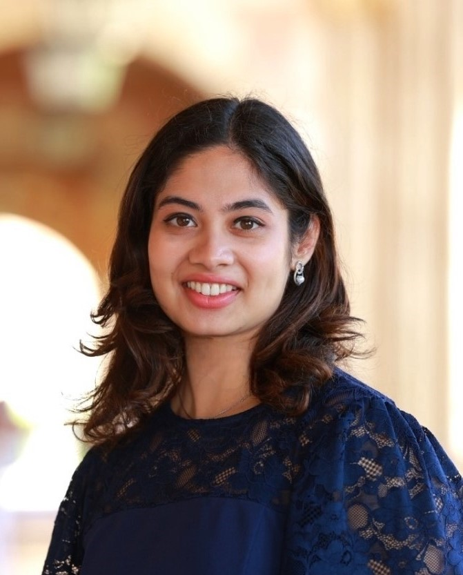

|  |
Roshni G. Iyer Senior Research Scientist Microsoft E-mail: roshnigiyer [at] gmail [dot] com |
I am a Senior Research Scientist at Microsoft, responsible for Microsoft Office's Copilot with Agent Mode. My work focuses on improving reasoning capabilities of agentic systems through finetuning, building training infrastructure, learning memory, and dataset curation, where I support a number of talented researchers and engineers. Previously, I drove Github's Copilot for Java Upgrade, advancing automated code migration. My research interests lie in natural language processing, data mining, and graph machine learning. My work has been published in various computing venues, including NeurIPS, KDD, IJCAI, EACL, ICDM, and ICML, and resulted in U.S. patents.
I obtained my Ph.D. degree in Computer Science (CS) from the University of California, Los Angeles (UCLA), with concentrations in artificial intelligence, data science computing, and applied statistics. I was advised by Prof. Yizhou Sun and Prof. Wei Wang, and my Ph.D. research was generously supported by the Amazon Ph.D. Fellowship and NSF Graduate Research Fellowship. Additionally, I served as President of UCLA's Computer Science Graduate Student Association (CS-GSA). I received my Bachelor's degree in Computer Science from the University of California, Berkeley (UC Berkeley).
Microsoft; Senior Research Scientist (Team Lead) (2024--present | Redmond, WA)
Copilot Engineering and Research Team | Microsoft Office, Github Orgs
Developing language-based models for improving reasoning capabilities of Copilots for Microsoft Office (Excel Agent) and Github. In addition to being deployed into production, my research led to a top-tier conference publication and U.S. patents.
Lead global teams (from India, China, U.S.) to drive Copilot’s architectural direction.
Github Copilot: Led Copilot's reward modeling pipeline, in direct collaboration with OpenAI, greatly improving reasoning capabilities through learning of nuanced, human-interpretable signals for model self-assessment. This enabled us to meet shipment bar to launch Java Migration Agent.
MS Office Copilot: Built Copilot’s first Reinforcement Learning training infrastructure prototype enabling cross-domain OS tool use for agentic tasks (e.g., OfficeJS generation). Led three small teams to scale training, and boost accuracy and latency by developing memory learning techniques e.g., KB Bootstrapping and trajectory-aware causal inference, enabling successful release of Excel Agent.
Ph.D. Researcher, UCLA (2019--2024 | Los Angeles, CA)
NSF Center for Computer Assisted Synthesis (C-CAS)
Overview: Developed machine learning models for knowledge graphs, social networks, QA systems, computational chemistry, and GNNs for various applications including physical sciences.
Amazon; Applied Scientist II Intern(2021--2023 | Los Angeles, CA)
Amazon Alexa AI Team, Fulltime Employee and Year-Round Internship concurrent w/ Ph.D.
Summary: Led the end-to-end lifecycle of cutting edge AI research for Generative AI conversational question-answering at Amazon across three year-round internships, from initiating research to address core business needs, ideation and iteration of model prototyping, conducting extensive performance testing for accuracy and latency, to model deployment in Amazon Alexa, one of the company’s flagship products. Built Alexa’s first LLM‑guided graph‑based QA model exploiting dynamic contextual retrieval. (A version of personalized RAG before RAG was invented!)
Overview: Developed open-domain QA models for conversational AI using graph-based relational learning. Created an LLM-guided GNN model to effectively capture data dependencies of Q-Q, Q-A, A-A pairs for the challenging task of answer-sentence QA. This enabled for more precise and detailed answers from Alexa. The model was deployed and resulted in a top-tier conference publication.
Intel; Research Scientist Intern (2020 | Santa Clara, CA)
Intel Labs Team
Improving Language Agents through BREW: Bootstrapping expeRientially-learned Environmental knoWledge
Shashank Kirtania, Param Biyani, Priyanshu Gupta, Yasharth Bajpai, Roshni G. Iyer, Sumit Gulwani, and Gustavo Soares
the 1st International Workshop on Multi-Turn Interactions in Large Language Models (NeurIPS: MTI-LLM 2025)
MolX: Enhancing Large Language Models for Molecular Learning with A Multi-Modal Extension
Khiem Le, Zhichun Guo, Kaiwen Dong, Xiaobao Huang, Bozhao Nan, Roshni G. Iyer , Xiangliang Zhang, Olaf Wiest, Wei Wang, and Nitesh V. Chawla
the 31st ACM SIGKDD International Workshop on Machine Learning on Graphs in the Era of Generative Artificial Intelligence (KDD: MLoG-GenAI 2025)
Non-Euclidean Mixture Model for Social Network Embedding
Roshni G. Iyer, Yewen Wang, Wei Wang, and Yizhou Sun
the 38th Annual Conference on Neural Information Processing Systems (NeurIPS 2024)
Graph-based Molecular Representation Learning
Zhichun Guo, Kehan Guo, Bozhao Nan, Yijun Tian, Roshni G. Iyer, Yihong Ma, Olaf Wiest, Xiangliang Zhang, Wei Wang, Chuxu Zhang, and Nitesh V. Chawla
the 32st International Joint Conference on Artificial Intelligence (IJCAI 2023)
Question-Answer Sentence Graph for Joint Modeling Answer Selection
Roshni G. Iyer, Thuy Vu, Alessandro Moschitti, and Yizhou Sun
the 17th Conference of the European Chapter of the Association for Computational Linguistics (EACL 2023)
Dual-Geometric Space Embedding Model for Two-View Knowledge Graphs
Roshni G. Iyer, Yunsheng Bai, Wei Wang, and Yizhou Sun
the 28th ACM SIGKDD International Conference on Knowledge Discovery and Data Mining (KDD 2022)
Bi-Level Attention Graph Neural Networks
Roshni G. Iyer, Wei Wang, and Yizhou Sun
the 21st IEEE International Conference on Data Mining (ICDM 2021)
Hierarchical Attention Models for Multi-Relational Graphs
Roshni G. Iyer, Wei Wang, and Yizhou Sun
the 2nd International Workshop on Deep Learning on Graphs: Methods and Applications (KDD: DLG 2020)
Bi-Level Attention Neural Architectures for Relational Data
Roshni G. Iyer, Wei Wang, and Yizhou Sun
the 37th International Workshop on Graph Representation Learning and Beyond (ICML: GRL+ 2020)
Software Language Comprehension using a Program-Derived Semantic Graph
Roshni G. Iyer, Yizhou Sun, Wei Wang, and Justin Gottschlich
the 36th International Workshop on Computer-Assisted Programming (NeurIPS: CAP 2020)